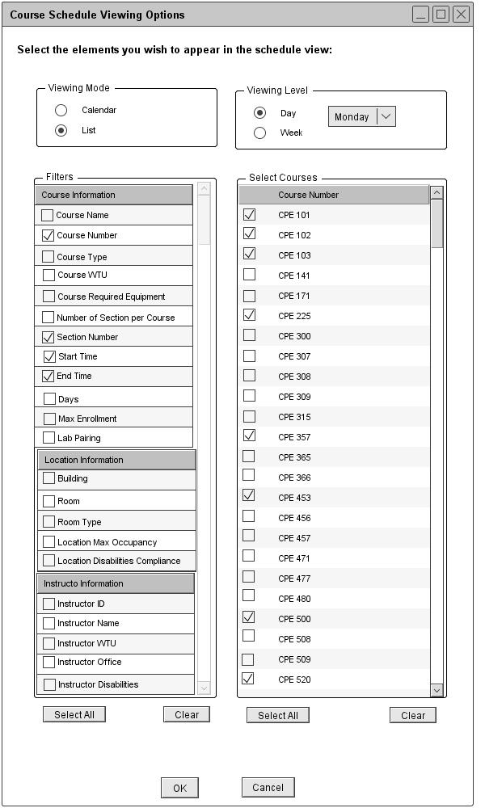
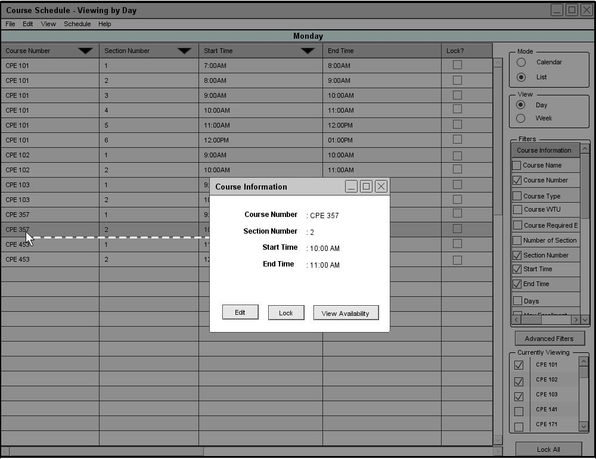

The Scheduler Tool displays a daily course schedule for the selected day of the week. Figure 72 is a filled in version of figure 66.

Figure 72: Viewing a course schedule in the list mode
From the user's selections in figure 72, the Schedule Tool displays a daily course schedule view in the list mode as shown in figure 70. The Course Number, Section Number, Start Time and End Time filter options are automatically selected and displayed on the schedule. When viewing a daily course schedule in the list mode, the data is sorted by course number, section number, and then start time by default.

Figure 73: Viewing the full description under the list mode
The Scheduler Tool allows administrators and instructors to temporary edit a scheduled item(course), view availability of instructors and locations during specific time, and lock a scheduled item. To edit, view availabilities, or lock a scheduled item, click on the row from the list schedule view. In response, the program displays a small dialog window with a full description for that particular row(course) with three buttons for the user to perform actions as shown in figure 73. (More details about Manual Editing, View Availability, or Locking)